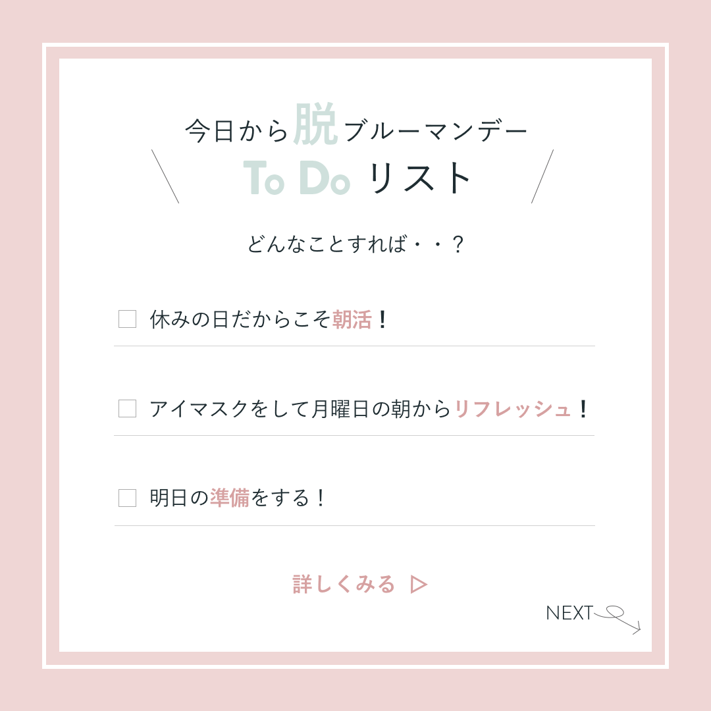
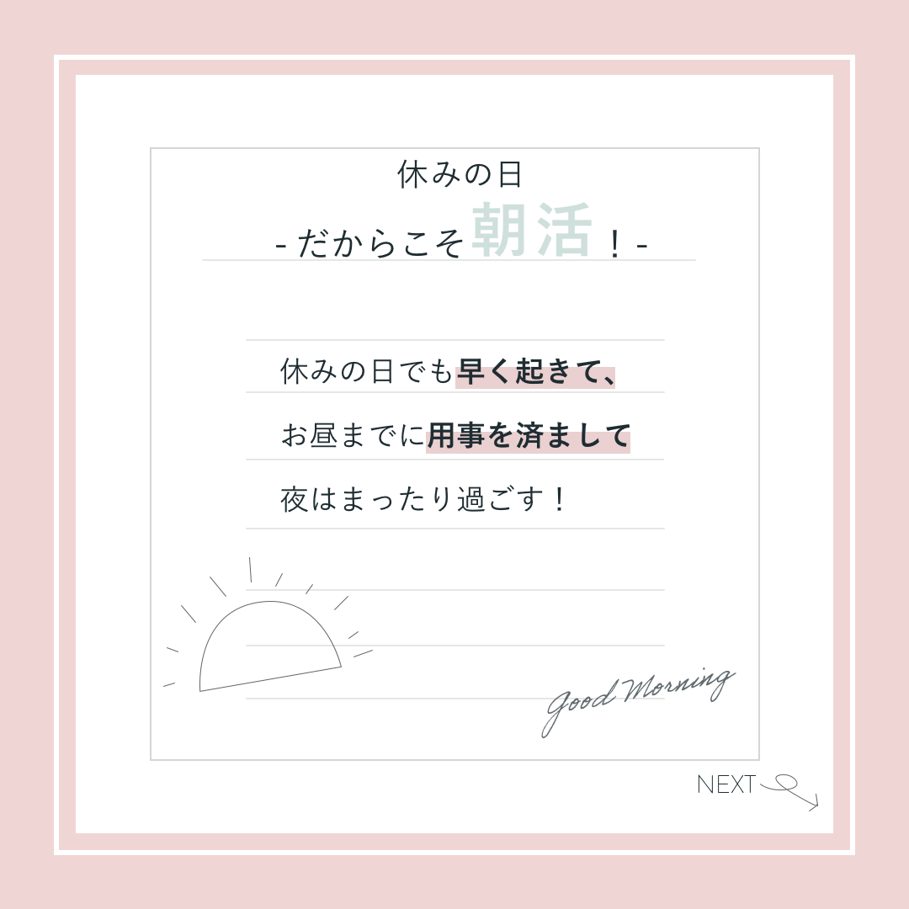
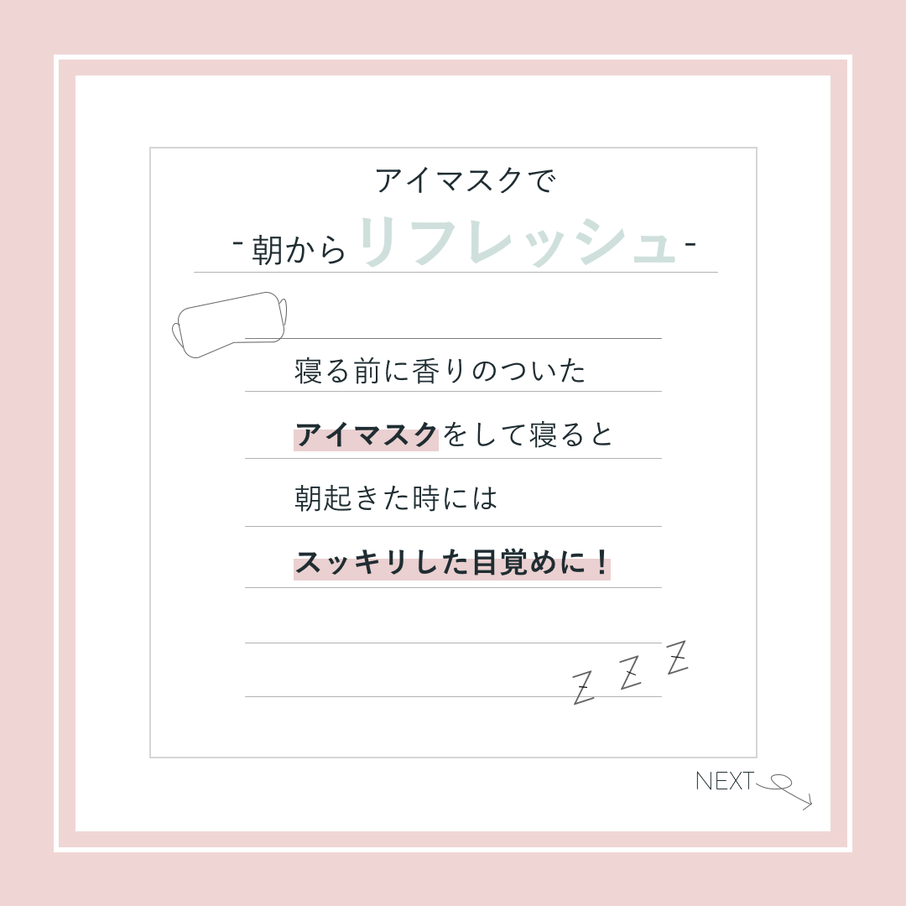
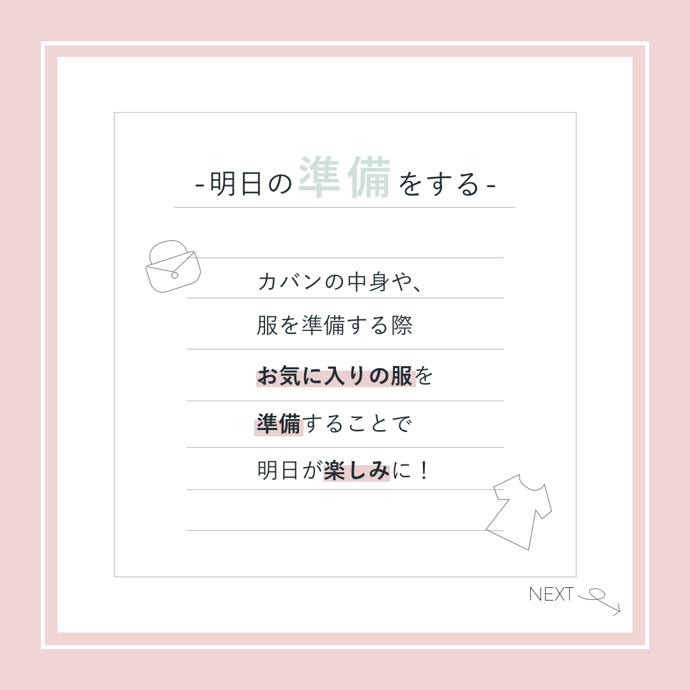
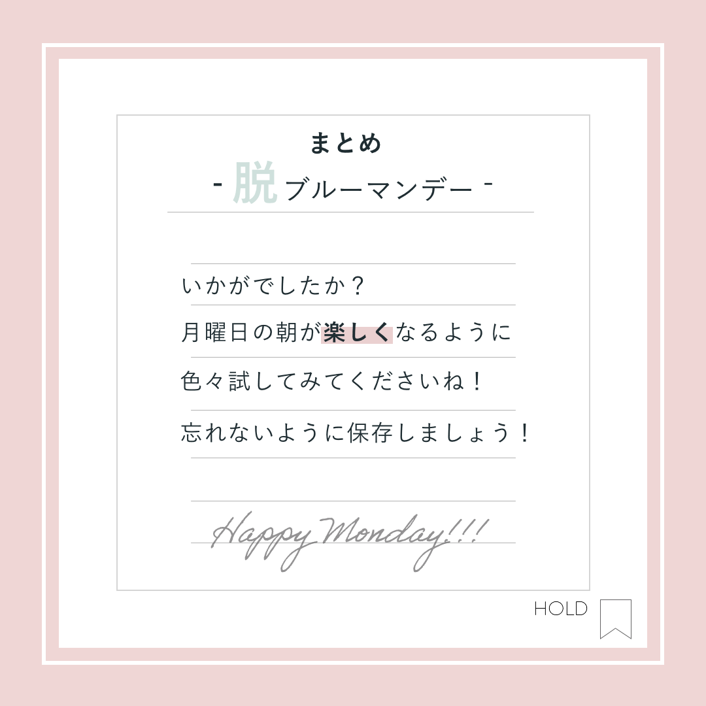

月曜日の朝は「憂鬱」「だるい」と感じる人が多く、
モチベーションが低下しやすい。
特にSNSでは「#ブルーマンデー」という言葉が広がるなど、
共感はされる一方で、解決につながる情報は少ない。
ユーザーが気軽に取り入れられる工夫や、
前向きな習慣の提案が求められていた。
「朝活」「アイマスク」「翌日の準備」など、実践しやすい小さなアクションをリスト化し、ユーザーが行動に移しやすいように設計。
「リフレッシュ」「楽しみ」「ご褒美」など前向きなワードを強調し、ブルーマンデーのネガティブイメージを反転。
各スライドに「NEXT」を配置し、ストーリー形式で最後まで見てもらえるよう導線を設計。
淡いピンクとホワイトをベースにし、週の始まりを少しでも明るく感じられる柔らかなトーンで統一。
「忘れないように保存しましょう！」と誘導を入れ、SNS上での拡散性と再利用性を高めた。




